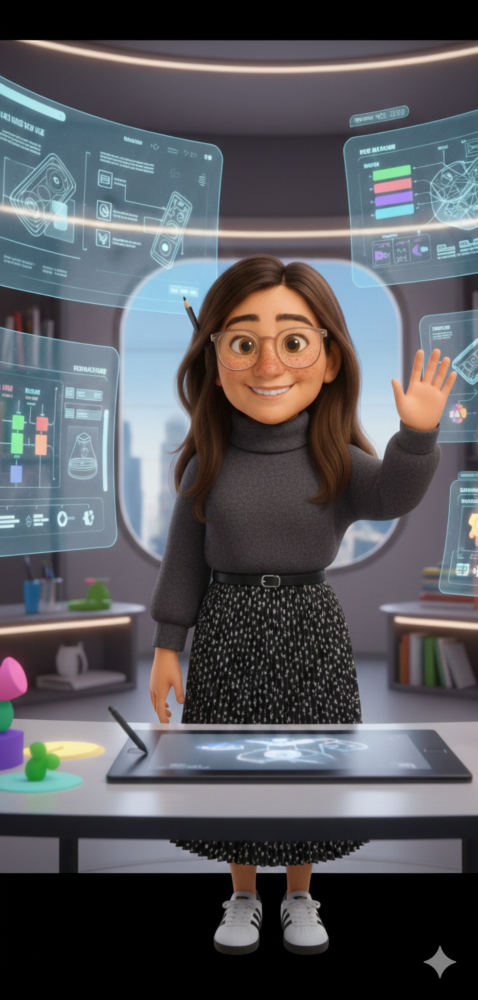
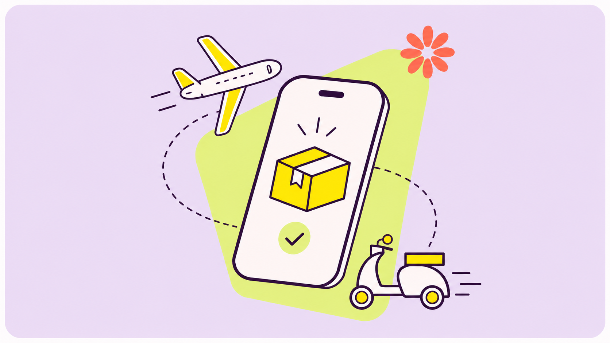
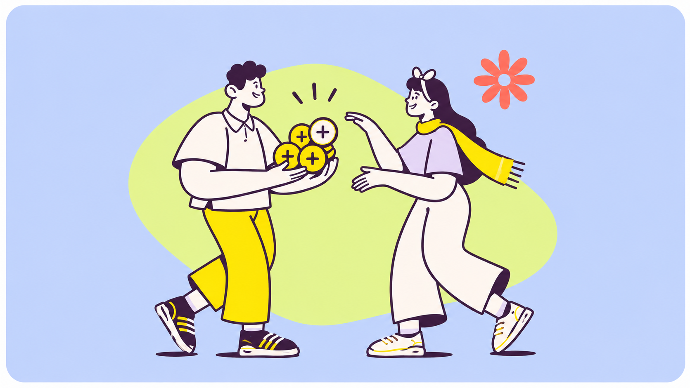
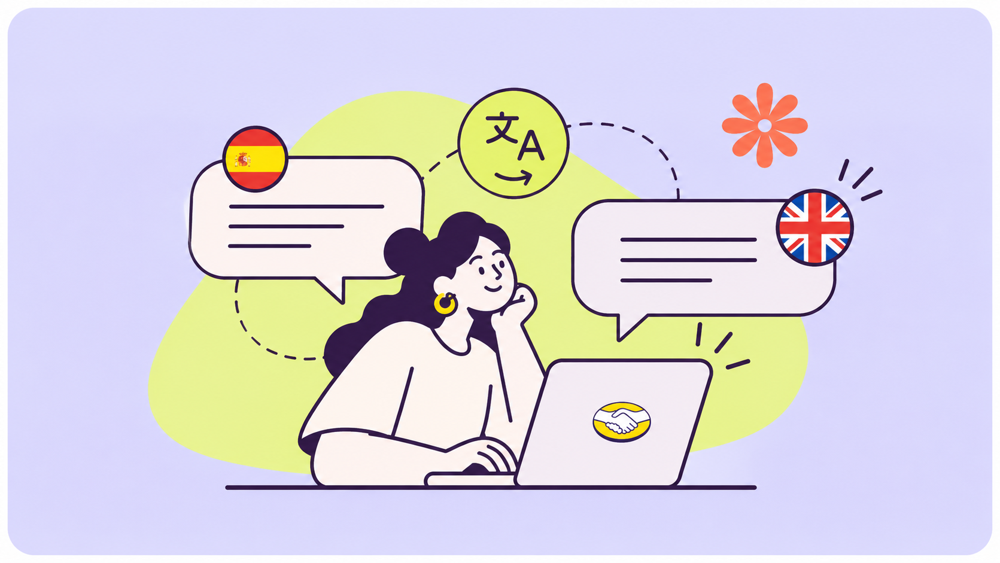

UX product designer - Words - Flows - Human behaviour
Making the
complex feel clear.
I’m Maria Gabriela — though most people call me Gaby. I bring together design, language and a curiosity for human behaviour to make products, services and everyday experiences easier to navigate.

01 · MEA few things I’ve worked on
Selected work
A mix of product thinking, content design
and service-shaped problem solving.
Restructuring a crowded seller dashboard into a more flexible, relevant Summary experience.
A date picker concept to help travellers choose an eSIM plan for the exact length of their trip.

Designing a clearer way to collect and validate device identifiers during label creation.

A rewards experience connecting eSIM purchases, HolaCoins and future travel.

Automatic translation helps buyers and sellers exchange questions and answers without a language barrier.
INTERNACIONAL
DE MÚSICA CLÁSICABOGOTÁ · 2021
made clear.RESEARCH · SCRIPTS · STORIES
Content across festival publications, educational storytelling and digital channels.
Case studies focus on the design decisions and documented project scope; no unsupported outcome claims.
How I think about design
The best experiences don’t ask people to work harder. They make sense of the complexity around them.
A little about me
Designing with
people in mind.
I’m a product designer with a background in communication, publishing and media — and a soft spot for the details that help people feel confident.
My work sits where product design, UX writing and service thinking meet. I bring clarity to complicated journeys, make space for different needs, and help teams turn research into experiences people can actually use.
I hold a Bachelor’s degree in Communication, Publishing and Media Studies, and I’m pursuing a Master’s in Design with Behavioural Science — exploring what shapes the way we think, decide and act.
Outside work, I’m usually with my dog, looking for good chocolate or planning my next trip.
Review some of my workWhat I bring
- Product & experience design
- UX writing & content strategy
- Accessibility & inclusive language
- Research & service journeys
- Cross-functional facilitation
- Behavioural science in practice
- Copywriting & content creation
- English, Portuguese & Spanish
Figma · Cursor · Codex · Notion · Excel · NotebookLM · Generative AI · AI-assisted Prototyping · Prompt Engineering · AI Workflows · AI Research Synthesis
Design with Behavioural Science
Master’s degree